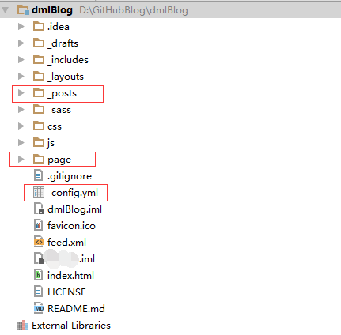

Jekyll是什么？
jekyll可以将纯文本转化为静态网站和博客。
Jekyll具体可以做什么，不在本文的讨论范围内，有兴趣的可以去官网上看看帮助文档。
Jekyll官网
安装Jekyll的过程
环境：本教程是在VPS的CentOS6.5上搭建的
1.安装Ruby
1.1 安装rvm,然后通过rvm安装较新版本的Ruby
gpg --keyserver hkp://keys.gnupg.net --recv-keys 409B6B1796C275462A1703113804BB82D39DC0E3
curl -sSL https://get.rvm.io | bash -s stable
source /etc/profile.d/rvm.sh
1.2 安装ruby 2.2.1
sudo yum install libyaml
rvm install 2.2.1
1.3 设为默认版本
rvm use 2.2.1 --default
2.安装 Nodejs
Jekyll 依赖 JavaScript 运行时库，需要安装 Nodejs
sudo rpm -ivh http://mirrors.zju.edu.cn/epel/6/i386/epel-release-6-8.noarch.rpm
sudo yum update
sudo yum install nodejs
3.安装 Jekyll
gem install jekyll
4.测试是否成功
jekyll new blog
cd blog
jekyll serve --host 0.0.0.0
然后在浏览器中打开 http://<外网 IP 地址>:4000，应能看到 Jekyll 默认页面。
5.搭建自己的静态博客
做好上述的准备后,就可以着手搭建自己的博客了.
5.1 如果你会前端
那么你可以自己写页面或者修改别人写的模板.
5.2 如果你不会前端
像我这样不会前端的,那么可以在网上找些Jekyll的模板,然后套上去就可以用了.
6. 如何套上模板
6.1 Jekyll主题介绍
如图

我们主要知道这三个地方就行了,有兴趣的也可以把所有的内容都看看.做到心里有数.
- _post:在这个路径下放你写的博客就行了.要注意命名规则和博客的handle规则.这些Jekyll的官网都有说明.不会博客可能不会显示出来.
- page:这个页面下放的是你的博客有几个tab页.
- _config.yml:关于Jekyll静态博客,所有的可配参数,都可以在这个配置文件中进行修改.
6.2 启动博客
把你的博客工程放到你的装好了Jekyll的VPS服务器上后,进入这个目录.用下面的几个命令就完事了.
启动你的博客,让任何主机都可以访问(--detach 表示后台运行):
jekyll serve --detach --host 0.0.0.0
当修改了博客,或者添加了博文的时候,需要先关闭在后台运行的博客服务.
查找博客进程,第一个就是,第二个是Jekyll服务,不用kill:
ps aux | grep jekyll
关闭上面查到的第一个进程就行了:
kill -9 pid
现在你在浏览器上就可以通过Ip+端口访问了.
6.3 购买域名+修改默认端口
6.3.1 购买域名
根据自己的需要购买自己的域名,价格根据你的选择而来的.我是在阿里云上买的.
购买域名的地址
买好域名后,再把域名和IP绑定,做好映射.买的时候注意看,会有引导步骤.
6.3.2 修改默认端口
Jekyll的默认端口是4000.但是浏览器访问的默认端口是80.为了省去别人访问你的博客的时候还得写端口.我们需要把Jekyll的默认端口修改为80
1.查看监听80端口
[root@bigdata ~]# netstat -nat | grep ':80'
tcp 0 0 0.0.0.0:80 0.0.0.0:* LISTEN
2.如果显示listen表示正在运行,那么我们需要先关闭被占用的80端口.切换到/etc/init.d服务启动脚本下面查看.(httpd就是了)
[root@bigdata init.d]# cd /etc/init.d/
[root@bigdata init.d]# ls
crond httpd modules_dep network quota_nld rsyslog single sshd
functions ip6tables named nmb rdisc sandbox smb udev-post
halt iptables netconsole nscd restorecond saslauthd snmpd winbind
htcacheclean killall netfs portreserve rpcbind sendmail snmptrapd xinetd
3.找到占用80服务的端口之后,通过命令关闭80端口.
[root@bigdata ~]# /etc/init.d/httpd stop
4.再次查看端口使用情况,已经没有80在使用了
[root@bigdata ~]# netstat -nat | grep ':80'
[root@bigdata ~]#
5.那么就可以把Jekyll的默认端口改成80就完事了.
修改你的模板下的_config.yml文件,在里面加上
port: 80
6.然后上传你的工程到VPS下,启动你的博客就行了,若是域名配好了,那么就可以用域名访问了
[root@bigdata dmlBlog]# jekyll serve --detach --host 0.0.0.0
完成了....